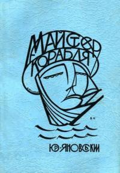
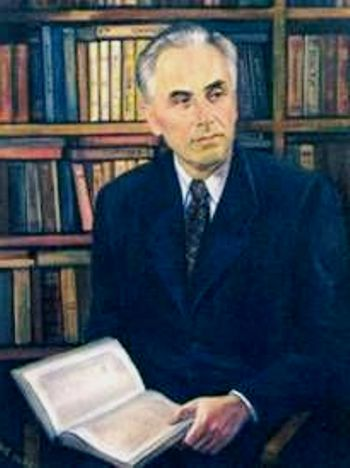
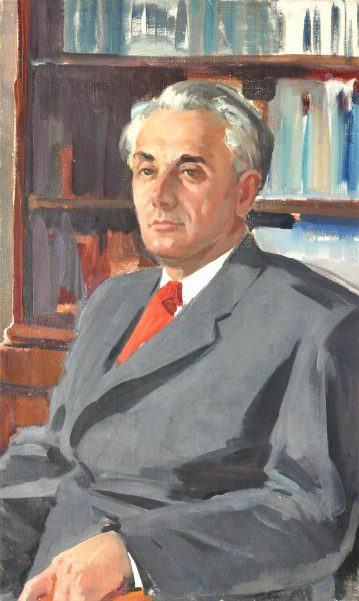
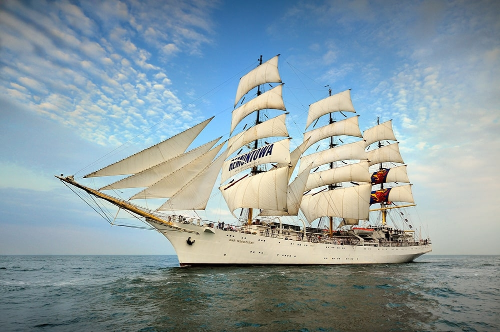

| Юрій Яновський – поет, прозаїк, драматург, редактор і журналіст кількох періодичних видань, редактор і сценарист ВУФКУ, художній керівник Одеської кінофабрики. |
Зміст
- 1. Паспорт та основна думка твору
- 2. Розкриття теми та проблематика
- 3. Роль в українській літературі
- 4. Особисті враження від твору
- 5. Використані джерела
|
| «Майстер корабля» — його перший роман, що порушує низку питань, особливо актуальних для модерністського покоління митців, та відображає творчу атмосферу 20–х років XX століття. Текст має ознаки містифікації, але все ж уважається автобіографічним. Роман написаний у 1928 році. |
Паспорт та основна думка твору
| Тема: роздуми митця про сенс земного буття, загадковість і велич людської душі, її поривання до гармонії та краси шляхом осягнення і минулого, і майбутнього; теми жінки, кохання. |
 |
| Ідея: утвердження торжества молодості, енергії, краси, щастя і творчості, непереможного життєлюбства; поетизація вільного творчого начала в українській людині, пробудженій до нового життя. |
У романі утверджується романтика вітаїзму, непереможне життєлюбство, яке наснажувало багатьох митців 20-х рр. XX ст. Ю. Яновський опоетизував вільне творче начало в українській людині, розбудженій до нового життя. (Це символізує будівництво вітрильника)
Розкриття теми та проблематика
|  |
В основі роману — власний досвід роботи письменника на Одеській кіностудії в 1925-1927 рр. та його співпраця з В. Кричевським, П. Нечесою, О. Довженком та Ітою Пензо, які згодом стали прототипами головних героїв:
- То-Ма-Кі (Товариш Майстер Кіно) — сам Юрій Яновський,
- Сев — режисер О. Довженко
- Професор — художник, знавець старовини професор В. Кричевський
- Директор — Павло Нечеса (очолював кінофабрику)
- Тайах — відома балерина Іта Пензо, пізніше репресована, подобалася Довженкові та Яновському
- Богдан — актор Григорій Гричер
- Місто — портова Одеса, тодішній "Голлівуд на березі Чорного моря"
|
Проблематика:
- -протиставлення молодості і старості;
- -молодість як час для творчості;
- -мистецтво як спосіб самовираження;
- -розуміння мистецтва;
- -кохання і його перепиття;
- -любовний трикутник;
- -дружба і довіра;
- -дружба і суперництво;
- -повага до людини;
- -любов до світу, природи
|
 |
Роль в українській літературі

Роман “Майстер корабля” (1928) з’явився о тій порі, коли багато українських письменників, слідом за М. Хвильовим, який відверто поставив питання “Камо грядеши?”, “Україна чи Малоросія?”, шукали відповіді на них.
Це абсолютно не збігалося із нав’язуваною більшовицькою ідеологією правлячою роллю робітничого класу як гегемона. В цьому ж ряду і роман “Майстер корабля” Юрія Яновського.
Це був абсолютно новаторський (за змістом і формою) твір в українській літературі. Вплив зарубіжної романтичної класики відчувається тільки на рівні світоглядному, що лише розширило художні обрії роману.
Особисті враження від твору
Оцінка експиртів:
|
Діана |
 |
| "Майстер корабля" Юрія Яновського - це захоплюючий роман, який вражає емоційною глибиною, мальовничими описами та динамічним сюжетом. |
|
Віктор |
 |
| ”Майстер корабля” дійсно є новаторським в українській літературі першої половини ХХ ст., де замість українського селянства чи робітничого класу описується міська інтелігенція, багатошаровість сюжету, дії у різних куточках світу та навіть екзотичні імена персонажів. Я вважаю, що такий оригінальний твір Юрія Яновського має великий вплив на різноманітність української літератури та обов’язково має вивчатися у школах |
|
Євген |
|
| "Майстер корабля" - це не просто роман, це справжній шедевр української літератури. Я рекомендую його всім, хто хоче по-справжньому насолодитися читанням. |
|
Гліб |
|
| Мені сподобався твір "Майстер корабля" написаний Юрієм Яновським, цей роман водить читача до пригоди та подорожі, сенсу буття та пошуку себе, про кохання та зраду, про добро та зло. Він мені сподобався своїми героями, їхньою компанією та їхніми історіями, проте як вони справлялися зі своїми труднощами, вирішували свої проблеми та йшли до своєї мети. |
|
Платон Інкогніто |
|
| Мені сподобався твір "Майстер корабля", перлина української літератури, написана Юрієм Яновським у 1928 році, веде читача захопливою мандрівкою крізь глибини людської душі, творчості та самопізнання. Цей модерністський роман, стилізований під мемуари, поєднує в собі елементи пригодницької, автобіографічної та мариністичної фантастики. |
|
Наталія |
|
| Мені сподобався роман "Майстер корабля". Він вразив мене своєю глибиною, щирістю та динамічністю сюжету. Я вважаю, що цей твір буде цікаво читати людям, які шукають відповіді на складні життєві питання, а також тим, хто цікавиться українською літературою та культурою 20-х років XX століття. |
Використані джерела
Юрій Яновський — Майстер корабля (аналіз, паспорт твору). URL:
https://www.ukrlib.com.ua/review/printit.php?tid=18288
Юрій Яновський “Майстер корабля” аналіз URL:
https://dovidka.biz.ua/iurii-ianovskyi-maister-korablia-analiz
Майстер корабля — повний текст твору. URL:
https://www.ukrlib.com.ua/books/printit.php?tid=54